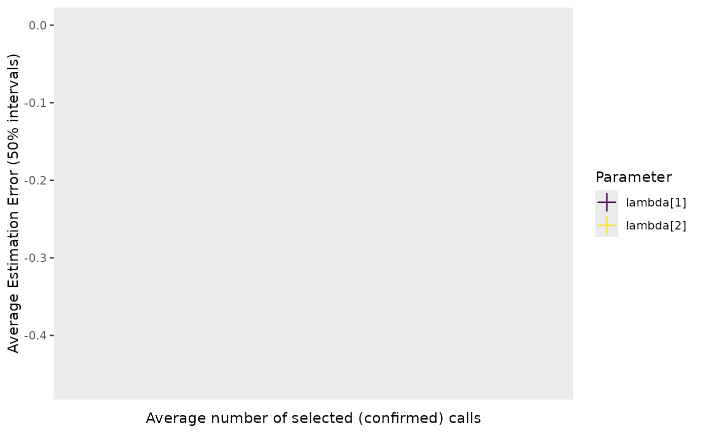

plot_bias_vs_calls: Compare validation designs based on estimation error and expected level of effort
plot_bias_vs_calls.Rdplot_bias_vs_calls: Compare validation designs based on estimation error and expected level of effort
Usage
plot_bias_vs_calls(
sim_summary,
calls_summary,
pars = NULL,
regex_pars = NULL,
theta_scenario,
scenarios,
max_calls = NULL,
convergence_threshold = 1.1
)Arguments
- sim_summary
Simulation summary from many datasets under many validation scenarios in the format output by mcmc_sum.
- calls_summary
Summary of the validation design in the format as output from summarize_n_validated
- pars
A character vector of parameters to visualize.
- regex_pars
String containing the name of a group of parameters to visualize. Must be one of "lambda", "psi", or "theta".
- theta_scenario
String containing the theta scenario ID that was used to run simulations in run_sims. This string must match between
calls_summaryandsim_summary.- scenarios
A vector of integers corresponding to the validation designs you would like to visualize.
- max_calls
The maximum number of calls that can be manually reviewed. All points beyond this threshold will be shaded gray in the plot. Default value is NULL.
- convergence_threshold
A threshold for the Gelman-Rubin statistic; values below this threshold indicate that a parameter has converged.
Examples
sim_summary <- example_output
calls_summary <- example_val_sum
plot_bias_vs_calls(sim_summary, calls_summary, regex_pars = "lambda",
theta_scenario = "1", scenarios = 1:2,
convergence_threshold = 1.05)
#> Warning: Position guide is perpendicular to the intended axis.
#> ℹ Did you mean to specify a different guide `position`?
#> Warning: Removed 20 rows containing missing values or values outside the scale range
#> (`geom_segment()`).
#> Warning: Removed 20 rows containing missing values or values outside the scale range
#> (`geom_line()`).
#> Warning: Removed 20 rows containing missing values or values outside the scale range
#> (`geom_label()`).
